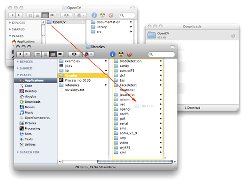
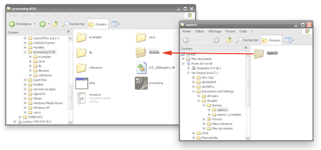

OpenCV is an open source computer vision library originally developed by Intel. It is free for commercial and research use under a BSD license. The library is cross-platform, and runs on Mac OS X, Windows and Linux. It focuses mainly towards real-time image processing, as such, if it finds Intel's Integrated Performance Primitives on the system, it will use these commercial optimized routines to accelerate itself.
This implementation is not a complete port of OpenCV. Currently, this library supports :
Future versions will include more advanced functions such as motion analysis, object and color tracking, multiple OpenCV object instances …
For more information about OpenCV visit the Open Source Computer Vision Library Intel webpage, the OpenCV Library Wiki, and the OpenCV Reference Manual (pdf).
Add <...>\OpenCV\bin to system PATH' during installation (or you need to add the rigth path by yourself later) and reboot your machine.DUE TO AN ERROR WHILE PACKAGING THE ZIP FILE, THIS VERSION UPDATED SHOULD SOLVE THE WINDOWS PROBLEM ABOUT DLL DEPENDENCIES AND OPENCV 1.0

The OpenCV Processing Library is a project of the Atelier hypermédia at the École Supérieure d'Art d'Aix-en-Provence. It is maintained by Stéphane Cousot and Douglas Edric Stanley. Special thanks to the openframeworks community for support and the C++ Binary Quicksort method.
OpenCV
The main object for all computer vision processes.
To use OpenCV library in a PApplet directly in pure Java, start with this small integration sample
for more details about Processing see the home page
import processing.core.*;
import hypermedia.video.OpenCV;
public class OpenCV_PApplet extends PApplet {
OpenCV cv = null; // OpenCV object
// Initialise Objects
public void setup() {
size( 640, 480 ); // set frame size
cv = new OpenCV( this ); // link OpenCV process to this PApplet
cv.capture( width, height ); // start video stream
}
// Display the input camera stream in frame
public void draw() {
cv.read();
image( cv.image(), 0, 0 );
}
// Call the PApplet main method
public static void main( String[] args ) {
PApplet.main( new String[]{"OpenCV_PApplet"} );
}
}
Blob
A storage object containing a blob detected by OpenCV.
Returned by blobs() method.